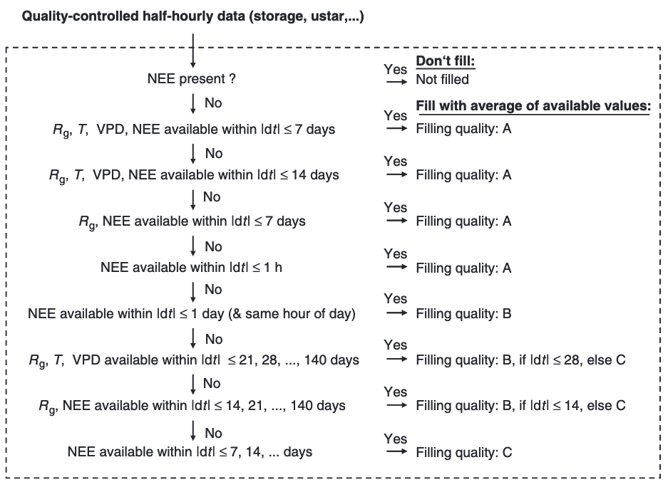

Carbon-Cycle Concepts
(Chapin et al., 2006) Reconciling Carbon-cycle Concepts, Terminology, and Methods
Research gap and aims: NEP has been used both to represent GPP-ER and net C accumulation rate previously, leading to confusion about what NEP estimates in the literature actually represent.
-> this study is designed to clearly defined C-cycling concepts and terminology
Takeaways:
NEP (ecosystem-centered quantity) = GPP - ER (Ra+Rh), positive as carbon gain by ecosystem
NPP = GPP - Ra
NECB as net rate of C accumulation in ecosystems = dC/dt
NECB = -NEE + FCO + FCH4 + FVOC + FDIC + FDOC + FPC
NEE (atmospheric-centered quantity), positive as carbon gain by the atmosphere, negative the opposite. NEE = ER - GPP
Gross primary production (GPP) is the sum of gross C fixation by autotrophic C-fixing tissues per unit ground or water area and time.
Autotrophic respiration (AR) is the sum of respiration (CO2 production) by all living parts of primary producers per unit ground or water area and time.
Heterotrophic respiration (HR) is the respiration rate of heterotrophic organisms (animals and microbes) summed per unit ground or water area and time.
Ecosystem respiration (ER) is the respiration of all organisms summed per unit ground or water area and time.
Net primary production (NPP) is GPP - AR. It includes not only the growth of primary producers (biomass accumulation and tissue turnover above and belowground in terrestrial ecosystems) but also the C transfer to herbivores and root symbionts (for example, mycorrhizal fungi), the excretion of organic C from algae, and the production of root exudates and plant VOCs (Long and others 1989; Clark and others 2001; Kesselmeier and others 2002). “Published summaries of data on terrestrial NPP are, however, usually based on data from litterfall and aboveground biomass accumulation and therefore are not closely aligned to the concept of NPP as the imbalance between GPP and AR (Clark and others 2001)“
A common conceptual framework (ecosystem as a volume with explicitly top, bottom and sides):

Strictly speaking, NEP ≠ NEE
NEE as Net CO₂ flux across the ecosystem–atmosphere boundary.
But NEP as Net biological imbalance between carbon fixation and respiration, may include accounts for the respiration that produces inorganic carbon (DIC, Organic C+O2→CO2+H2O, CO2(g)⇌ CO2(aq) and others conversions), respiration followed by lateral hydrological export, respiration in diffusion-limited environments…..
And definitely, NECB ≠ NEP
Other important fluxes include leaching loss from (or input to) the ecosystem of DOC; emission of CH4, CO, and VOCs; erosion; fire; harvest; and other vertical and lateral C transfers not include in NEP
Also, when inorganic C enters or leaves ecosystems for reasons other than an imbalance between GPP and ER.
Hints: NEE is opposite in sign to NEP and NECB because NEE is defined by atmospheric scientists as a C input to the atmosphere, whereas NEP and NECB are defined by ecologists as C inputs to ecosystems.
u* filtering

At night, clear and calm conditions, atmosphere becomes stably stratified (cool air settles near ground, warm air sits above -> suppress vertical mixing) -> CO2 produced near the surface by respiration accumulation close to the ground BUT EC measure vertical fluxes of CO2 which rely on turbulence -> underestimate the true respiration happening at the surface
Scientists assumes a threshold of u* (detect the minimum amount of turbulence needed for reliable nighttime NEE (ecosystem respiration) measurements), two methods:
- The moving point method (Papale et al., 2006 https://doi.org/10.5194/bg-3-571-2006):
Seperate BINS: Only nighttime data used (Rg < 10 W m-2) -> seasonal splitting (data are split by seasons to account for changes in surface properties) -> temperature subsets (each season is further split into 6 temperature bins using quantiles, to ensure homogeneity of respiration rates, temperature is closely related to respiration rates!) -> within each temperature subset, u* is divided into ~20 bins with equal number of points
Moving Point Test: For each bin i, compute mean NEE of bin i (\(\mu_i\)) and mean NEE of the next 10 bins (\(\mu_{i+1\,\ldots\,i+10}\)) -> Check if \(\mu_i > 0.95 \times \operatorname{mean}(\mu_{i+1}, \ldots, \mu_{i+10})\) and this holds for \(\mu_{i+1}\)->If so, bin i’s mean u* is the threshold
Gap-filling
Look-up Tables (LUT)
Overview: Tables were created for each site so that missing values of FNEE could be “looked-up” based on environmental conditions associated with the missing data.
Pick a gap in the cleaned (QC + u* filtered) flux data (VAR_fall is NA).
Set the search window — user-defined WinDays.i days before and after the gap; full window length = 2 × WinDays.i days.
Choose condition variables and tolerances — up to 5 meteorological drivers (e.g., Rg ±50 W m⁻², Tair ±2.5 °C, VPD ±5 hPa).
- Special rule: If the first variable is Rg, reduce tolerance at low light to a minimum of 20 W m⁻² and never exceed the original tolerance, to avoid mismatching dark and bright conditions.
Find candidate records inside the time window that:
- Have a measured original value (VAR_orig not NA), and
- For each active driver, the absolute difference from the gap’s value is less than the set tolerance (using the adjusted Rg tolerance if applicable).
Check sample size: Require at least 2 valid matches to proceed.
Fill the gap:
- Value = mean of all matching records.
- Uncertainty = standard deviation (SD) of the matching records.
- fnum = number of matches used.
Assign method code and QC:
- fmeth = 1 if ≥3 drivers used; fmeth = 2 if only 1 driver used.
- QC = 1 for short windows (≤14 days full span for ≥3 drivers; ≤14 or ≤28 days for 1 driver), QC = 2 for medium windows, QC = 3 for long windows.
Write results back: Store filled value, number of matches, SD, method code, window length, and QC in VAR_fall and related columns. Only fill VAR_f if it’s still NA.
Skip if no fill: If <2 matches found, leave the gap for later methods (e.g., MDC) in the MDS cascade.
Mean Diurnal Course (MDC)
Overview: Fills missing flux values by averaging measurements from the same time of day (±1 hour) on nearby days, assuming that conditions at the same time of day are similar on days close together. Medium performance but it has advantage that this approach can be used even if no meteorological information is available.
Pick a gap in the cleaned (QC + u* filtered) flux data (VAR_fall is NA).
Set the search window — by default ±7 days around the gap (user-defined WinDays.i), giving a full window length of 2 × WinDays + 1 days.
Identify same-time-of-day neighbors:
Use the gap’s position in the day and collect indices for:
- The current day: ±2 records (≈±1 hour) around the gap time.
- Each day up to WinDays.i days before and after: same-time ±1 hour.
Keep only measured points: Remove any candidate records where the original flux (VAR_orig) is NA.
Check sample size: Require at least 2 valid neighbors to proceed.
Fill the gap:
- Value = mean of all valid neighbors.
- Uncertainty = standard deviation (SD) of those neighbors.
- fnum = number of neighbors used.
Assign method code and QC:
- fmeth = 3 (MDC method).
- fwin = number of days spanned (2 × WinDays + 1).
- QC = 1 if ≤1 day used; 2 if >1–5 days; 3 if >5 days.
Write results back: Store filled value, number of points, SD, method code, window length, and QC in VAR_fall and related columns. Only fill VAR_f if it’s still NA.
Marginal Distribution Sampling (MDS)

Overview: To solve the 1) covariation of the fluxes with the meteorological variables and 2) temporal autocorrelation based on LUT and MDC
(1) Only the data of direct interest are missing, but all meteorological data are available
-> [LUT] the missing value is replaced by the average value under similar meteorological conditions within a time-window of 7 days. Similar meteorological conditions are present when Rg, Tair and VPD do not deviate by more than 50 W m 2, 2.5 1C, and 5.0 hPa, respectively. If no similar meteorological conditions, averaging window is increased to 14 days.
(2) Air temperature or VPD is missing, but radiation is available
-> the same approach is taken, but similar meteorological conditions can only be defined via Rg deviation less than 50 W m 2
(3) Radiation data is missing
-> the missing value is replaced by the average value at the same time of the day (1 h), i.e. by the mean diurnal course. In this case, the window size starts with 0.5 days
For other gap filling methods and related evaluations, 10.1016/j.agrformet.2007.08.011
Daytime Partitioning REddyProc/PartitioningLasslop10.R
Entry Points: partitionNEEL () & partGLControl () partitionNEEL () is the master (wrapper) function that orchestrates all the sub-functions — it calls every key step of daytime partitioning in sequence: extract data → fit nighttime temperature sensitivity → fit daytime light-response curves → interpolate parameters → predict Reco and GPP → output results.
partGLControl () is the “knobs panel” for daytime partitioning.
isFilterMeteoQualityFlag (default False); If TRUE, the LRC fit uses only non-gapfilled met drivers (Temp, VPD, Rg) where the _QC == 0. Predictions still use gapfilled drivers.
isLasslopPriorsApplied (default TRUE); Applies strong fixed priors/constraints on LRC parameters (α, β, k, Rref) in sparse/ill-conditioned windows.
smoothTempSensEstimateAcrossTime (default TRUE), Smooths the nighttime E0(t) estimates across windows before using them in daytime fits.
isBoundLowerNEEUncertainty (default TRUE); Prevents tiny NEE_SE from giving a few points huge leverage (bounds sdNEE to max(0.2·|NEE|, 0.7)).
replaceMissingSdNEEParms (default c(0.2, 0.7)) and neglectNEEUncertaintyOnMissing (default FALSE); If NEE_SE is missing, replace with 20% of |NEE| but at least 0.7; OR if you set neglectNEEUncertaintyOnMissing=TRUE, set all sdNEE=1 when any are missing in a window.
minNRecInDayWindow (default 10); Minimum valid daytime records per window for fitting. If too high, you get NA windows (lost parameters → more interpolation). Too low → unstable fits.
isNeglectVPDEffect (default FALSE) and isRefitMissingVPDWithNeglectVPDEffect (default TRUE). If VPD is scarce/missing, auto-refit LRC without VPD and use those parameters for predictions with missing VPD.
fixedTempSens (E0, sdE0, RRef) If you provide a fixed E0 (and optionally RRef), REddyProc skips nighttime E0 estimation and uses your E0 (with sdE0 for bootstrap).
useNightimeBasalRespiration (default FALSE) Implements Keenan (2019) modification: recompute nighttime Reco from nighttime-based Rref rather than daytime basal respiration.
isNeglectPotRadForNight (default FALSE) Defines night using only Rg≤4 (ignoring potential radiation).
LRCFitConvergenceTolerance / nLRCFitConvergenceTolerance Optimizer tolerances. Tighter → more precise but slower; looser → faster but slightly different parameters.
isUsingLasslopQualityConstraints (default FALSE) and minPropSaturation (default NA): Extra data quality checks (beyond original Lasslop constraints) and a “sufficient saturation” criterion.
nBootUncertainty (default 30) and isSdPredComputed (default TRUE) Bootstrap parameter SDs and propagate to sdReco/sdGPP. 30 is a good balance; set 0 for speed when you don’t need SDs.
Inputs and screening: partGLExtractStandardData() and replaceMissingSdByPercentage()
1) partGLExtractStandardData() as the “clean-room loader” for daytime partitioning. It pulls the right columns from your input
ds, applies quality flags the way you ask it to, decides which timesteps are day vs night (Lasslop-style), and prepares a compact data.frame that all later steps use.
Inputs & Controls:
NEEVar (NEE_f), QFNEEVar (NEE_fqc), QFNEEValue (default 0, which treated as “good/original”), NEESdVar (NEE_fsd)
TempVar (Tair_f), QFTempVar (Tair_fqc), QFTempValue (as 0),
VPDVar(VPD_f), QFVPDVar (VPD_fqc), QFVPDValue (as 0),
RadVar (Rg_f), QFRadVar (Rg_fqc), QFRadValue (as 0),
PotRadVar (PotRad_NEW)
controlGLPart$isFilterMeteoQualityFlag (default as False), use the filled met drivers as-is
If TRUE, replace met drivers with only the “good/original” records per their QC flags; otherwise set to NA
controlGLPart$isNeglectPotRadForNight (default as False), day/night uses both Rg threshold and PotRad sign, TRUE by day/night depends only on Rg threshold
Quality-flag filtering:
fSetQF(ds, NEEVar, QFNEEVar, QFNEEValue), returns NEEFiltered: keeps only rows where the QF equals QFNEEValue (usually 0). Others become NA. This ensures daytime LRC fits don’t “trust” gap-filled NEE (consistent with Lasslop).
Meteo drivers (only if isFilterMeteoQualityFlag == TRUE): NEW_FP_Temp = fSetQF(Tair_f, Tair_fqc, 0) else ds[[“Tair_f”]]; NEW_FP_VPD = fSetQF(VPD_f, VPD_fqc, 0) else ds[[“VPD_f”]]; NEW_FP_Rg = fSetQF(Rg_f, Rg_fqc, 0) else ds[[“Rg_f”]]
Most people leave isFilterMeteoQualityFlag = FALSE so that filled met drivers drive the prediction stage but are not required to be “original” for fitting (Lasslop’s standard practice still requires original/good NEE for fitting).
Day/Night Flags:
Radiation threshold: Rg > 4 → day; Rg ≤ 4 → night (Lasslop 2010)
Potential radiation guard (to avoid twilight artifacts): If isNeglectPotRadForNight == FALSE (default): isNight = (Rg ≤ 4) & (PotRad ≤ 0); isDay = (Rg > 4) & (PotRad > 0) If TRUE, the PotRad conditions are dropped: isNight = (Rg ≤ 4); isDay = (Rg > 4)
Outputs:
partGLExtractStandardData() returns a compact data.frame named (by you) dsR with:
sDateTime: just ds[[1]] (the first column, usually timestamps; kept for debugging) NEE: quality-filtered NEE (others are NA) sdNEE: standard deviation (uncertainty) of NEE; may be modified next step Temp: temperature series (possibly QC-filtered if you opted in) VPD: VPD series (possibly QC-filtered if you opted in) Rg: radiation series (possibly QC-filtered if you opted in) isDay: logical isNight: logical
- replaceMissingSdByPercentage() This is a tiny, vectorized helper that fills only the missing entries of a standard deviation vector using a conservative rule tied to the signal magnitude.
SIGNATURE: replaceMissingSdByPercentage <- function(sdX, x, perc = 0.2, minSdX = 0.7)
For every record where the uncertainty (sdNEE) is missing, we fill it with the larger of two values: 20% of the absolute NEE flux magnitude, or 0.7 (the minimum allowed uncertainty).This way, all data points have a reasonable uncertainty estimate for weighting during light-response-curve fitting.
- replaceMissingSdByPercentage() This is a tiny, vectorized helper that fills only the missing entries of a standard deviation vector using a conservative rule tied to the signal magnitude.
Nighttime temperature sensitivity:R/PartitioningLasslop10Nighttime.R
partGLFitNightTimeTRespSens(), estimate the night-based respiration parameters required by the daytime (Lasslop-style) partitioning: E0, sdE0 and Rref.
Inputs and Windowing:
Inputs: data with columns NEE, Temp (°C), isNight, isDay, (and typically sdNEE, Rg, VPD present).
Windowing: winSizeNight (default 12 days): length of each night fit window.
winSizeRefInDays (default 4 days): reference/anchor window (aligns centers for daytime partitioning, which uses 4 days windows).
strideInDays (default 2 days): step between window centers (creates overlap).
nRecInDay (default 48): records per day (half-hourly data).
For robustness, winExtendSizes (default 24 & 48 days), larger windows tried if 12-day fit fails (only if controlGLPart$isExtendTRefWindow = TRUE).
Processing STEPS:
1) Estimate E0 per window. For each window, calls partGLFitNightTempSensOneWindow(), which 1) Filters to valid night records (finite NEE & Temp, isNight=TRUE; optionally trims ≤ −1 °C if enough points); 2) Chooses fit reference temperature TRefFit (median night Temp unless fixed in control); 3) Fits Lloyd–Taylor on (NEE vs Temp) to get E0, sdE0, and RRefFit (at TRefFit). If 𝐸0∉[50, 400] or fit fail E0 = NA
- Recover failed E0 windows by extending window size (optional). If some E0 are NA and controlGLPart$isExtendTRefWindow=TRUE, repeat Step 2 for larger windows (winExtendSizes, e.g., 24d then 48d) and fill only those windows that were NA.
- Sanity check for too few valid E0. If fewer than 5 finite E0 and fewer than 10% of windows succeed → stop(); the series is too sparse to proceed.
- Preserve raw estimates before smoothing. Copy E0 → E0Fit, sdE0 → sdE0Fit (bookkeeping).
- Smooth E0 over time (optional), happened through Year-by-year Gaussian Process smoothing (via mlegp), using sdE0^2 as nugget when controlGLPart$smoothTempSensEstimateAcrossTime = TRUE
- Estimate RRef at 15 °C using smoothed E0. alls applyWindows() with partGLFitNightRespRefOneWindow(), With E0 fixed for that window and compute Rref.
- Fill leading NA in RRef.
- Return the parameter series.
- Recover failed E0 windows by extending window size (optional). If some E0 are NA and controlGLPart$isExtendTRefWindow=TRUE, repeat Step 2 for larger windows (winExtendSizes, e.g., 24d then 48d) and fill only those windows that were NA.
Daytime fitting over moving windows partGLFitLRCWindows(), partGLFitLRCOneWindow()
partGLFitLRCOneWindow() fits the rectangular hyperbolic LRC in a single daytime window, using E0 (sdE0) and RRef that were determined from nighttime for that same window.
partGLFitLRCWindows() loops over many windows, calls partGLFitLRCOneWindow() repeatedly, collects all results, merges them with the corresponding nighttime E₀ and RRef, and returns one tidy data frame of window-wise parameters.The light-response model families RectangularLRCFitter(), NonrectangularLRCFitter() / LogisticSigmoidLRCFitter()
Bootstrap & Uncertainty .bootStrapLRCFit(), Prediction SDs in partGLInterpolateFluxes()
From windows to HH, partGLInterpolateFluxes(), .partGPAssociateSpecialRows()
Nighttime Reco override & covariances .computeRecoNight(),computeAggregatedCovariance() (helper)
GPP records:
(Rowland et al., 2014) /Aggregated Canopy Model/ Eastern Amazonian Forest/3756.7 +-19.1 gC m-2 yr-1
(Zanotelli et al., 2013)/EC/An apple chard/1263 ± 189 gC m-2 yr-1 [Following Reichstein et al. (2005), GPP was 1074, Reco 723 and NEP 351 g C m−2 yr−1. Following Lasslop et al. (2010), these values were 945, 433 and 512 g C m−2 yr−1, respectively.]